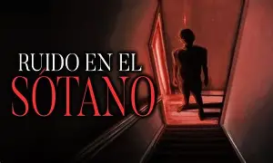
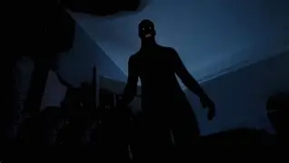

Historias Destacadas
Si eres nuevo por aquí, te recomendamos empezar por estos relatos:

Leer historia completa
El taxímetro marcaba la medianoche cuando un hombre de gabardina gris subió al auto. No dijo una sola palabra, solo señaló hacia el cementerio general. El frío dentro del vehículo se volvió insoportable. Al mirar por el retrovisor para preguntar por la dirección exacta, el asiento estaba completamente vacío... pero el olor a tierra mojada aún permanecía allí.

Leer historia completa
Comenzó como un leve rasguño detrás de la lavadora. Con los días, los ruidos se transformaron en sílabas distorsionadas que pronunciaban mi nombre de pila. Ayer bajé con una linterna; las pilas se agotaron al instante. En la absoluta oscuridad, una voz infantil pegada a mi oreja susurró: "Gracias por bajar a jugar".

Leer historia completa
Se proyectaba en la esquina de mi armario. Al principio pensé que era la ropa colgada, pero la silueta tenía garras largas y una hilera de dientes blancos tallados en la oscuridad. No se mueve, solo se expande a medida que mi miedo crece. Anoche descubrí que si cierro los ojos, la silueta aparece en mi mente, sonriendo aún más cerca.